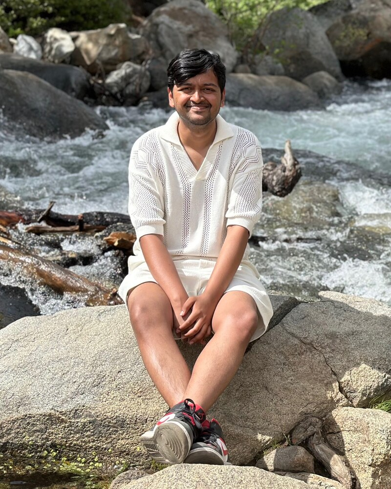
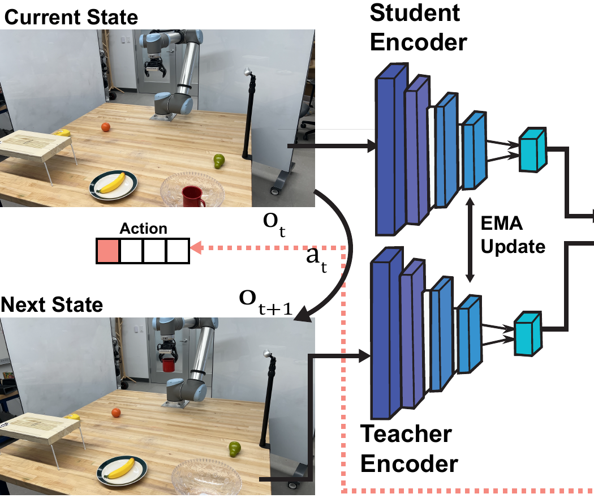

I am currently a Research Intern at Siemens in Berkeley, California, working on self-supervised video pretraining for robotics. I am also a third-year PhD student in Robotics Engineering at Worcester Polytechnic Institute, advised by Prof. Constantinos Chamzas and part of the ELPIS Lab, where my research focuses on learning world models and symbolic abstractions for long-horizon robot manipulation.
Before my PhD, I worked with Eugen Solowjow's team at Siemens in Berkeley, conducting research on industrial manipulation and manufacturing. Our work involved transitioning technologies from TRL 3 to TRL 7, supported by the ARM Institute via the Department of Defense and NIST. I contributed to projects including tactile manipulation for defect detection of aircraft (with Boeing, CMU, and GelSight) and textile manipulation (with Levi's and Bluewater Defense).

